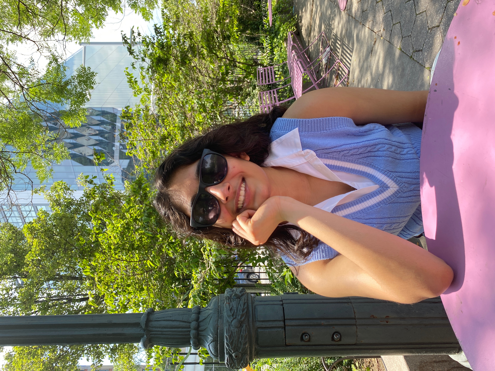
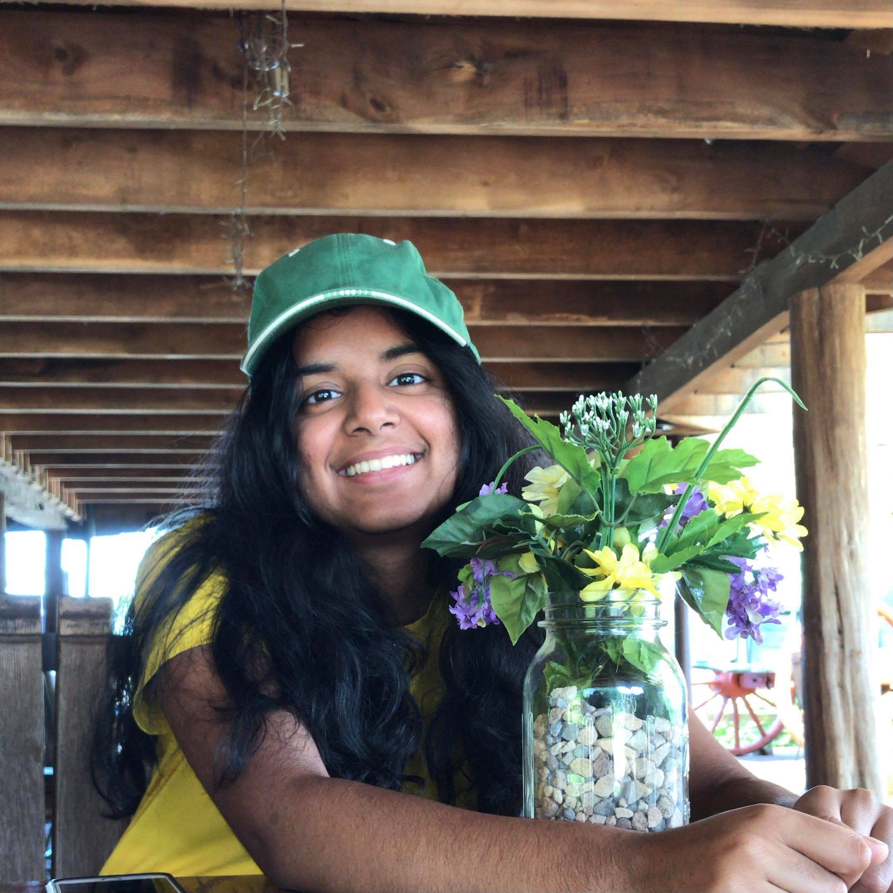

Meet Our Team
TJ Techstravaganza Team for 2022
Tanvi Bhave
Publicist
Tanvi is a junior and has been coming to TWIST for the past two years. This is her first year as an officer of the club. In her free time she loves listening to music, running, and playing basketball. Favorite artist: Billie Eilish Favorite ice cream: Coconut Favorite food: Hashbrowns Favorite youtuber: Emma Chamberlain
Sophia Li
Activities Coordinator
Sophia is a junior who joined TWIST two years ago
and is excited to be an officer this year! She loves music,
volleyball, f1, and reading.
Favorite season: Fall
Favorite artist: BTS
Favorite color: Green
Favorite book: Six of Crows
Tanisha Pagadala
Treasurer
Tanisha is a senior and is excited to start her fourth year of TWIST as an officer! She loves card games, watching Disney movies, and playing tennis. Favorite snack: Goldfish Favorite artist: Alec Benjamin Favorite podcast: Dear Hank and John Favorite movie: Tangled
Valentina Hong
Techstrav Supervisor
 Valentina is a junior and is excited for her first year on the Techstrav team.
In her free time, she loves listening to music, bullet journaling, and hanging out with friends.
Favorite Candy: Kit Kats
Favorite Color: Sage Green
Favorite Drink: Taro Bubble Tea
Favorite Season: Fall
Valentina is a junior and is excited for her first year on the Techstrav team.
In her free time, she loves listening to music, bullet journaling, and hanging out with friends.
Favorite Candy: Kit Kats
Favorite Color: Sage Green
Favorite Drink: Taro Bubble Tea
Favorite Season: Fall
Rebecca Hsieh
Techstrav Supervisor
 Rebecca is a junior, and this is her second year on the Techstrav team. In her
free time, she loves to fence, watch football, and read.
Favorite football team: New England Patriots
Favorite color: Sage Green
Favorite book series: Cruel Prince
Favorite Dog: Shiba Inu
Rebecca is a junior, and this is her second year on the Techstrav team. In her
free time, she loves to fence, watch football, and read.
Favorite football team: New England Patriots
Favorite color: Sage Green
Favorite book series: Cruel Prince
Favorite Dog: Shiba Inu
Serenna Semonsen
Techstrav Supervisor
 Serenna is a sophomore and is delighted to start her first year on the Techstrav team.
In her free time, she likes playing the violin and discovering new music.
She also loves traveling around the world and trying out new activities.
Favorite Subject: Chemistry
Favorite Book: All The Light We Cannot See
Favorite Animal: Ferret
Favorite Holiday: Christmas
Serenna is a sophomore and is delighted to start her first year on the Techstrav team.
In her free time, she likes playing the violin and discovering new music.
She also loves traveling around the world and trying out new activities.
Favorite Subject: Chemistry
Favorite Book: All The Light We Cannot See
Favorite Animal: Ferret
Favorite Holiday: Christmas